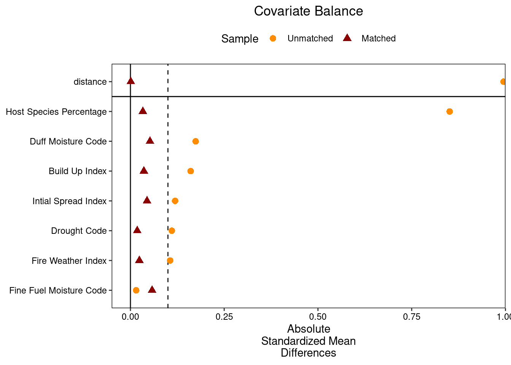

fire_insect_co-occurence_report
Overview
Background
Fire severity is a measure of biomass and soil change used to gauge how intensely an ecosystem was impact by fire (Lentile et al 2013). A number of studies have hypothesized about the potential impact that spatial legacies of SBW defoliation may have on wildfires. While there is evidence that supports insect-induced changes in vegetation structure prior to wildfire (Watt et al 2018, 2020), the causality between these changes and wildfire impacts such as changes in severity remain uncertain. This is because trying to establish how SBW legacies impact fire severity causally requires a control observation to compare outcomes, and since most studies rely on historical defoliation and wildfire observational data. Identifying a control group is difficult as factors that influence fire outcomes include slope, vegetation type, or vegetation moisture. Therefore, establishing a control observation requires identifying statistically similar controls that burned under similar conditions. Fortunately, pre-processing methods such as propensity score matching are an established method for identifying such quasi-experimental controls in wildfire studies (Bustic, Woo x2 etc). Using pre-processed datasets, analysis such as linear regression can be used to predict treatment effect on fire severity.
In observational studies, propensity score matching (PSM) is a common statistical technique applied to create a control group that is comparable in confounding variables to a treatment group in studies where treatments are unable to be randomly assigned. For each observation a propensity score (PS) is calculated which reflects the probability of receiving the treatment based on observed characteristics (i.e., potential confounders). Using PS researchers can match participants from the treatment group with those from the control group based on the similarity between scores. The degree of similarity can be selected by researchers. Referred to as the caliper, it is suggested that the degree of similar is within +/- 0.3. By simulating the conditions of a randomized controlled trial, the process of PS matching helps to balance the groups on observed characteristics, thereby reducing bias and allowing for a more accurate estimate of the treatment’s impact. Using the balanced dataset, researchers are able to provide a more robust and reliable estimate of the treatment’s effect.
In this study, we aim to reduce the uncertainty surrounding the impacts of spatial legacies of SBW defoliation on wildfire in Ontario’s boreal shield. We applied PSM to create a balanced control-treatment experimental design with observation data on wildfire-defoliation co-occurrences. We identified wildfires-defoliation co-occurrences between 1985-2012 using aerial-survey defoliation data and remotely sensed wildfire data. For each area, we quantified median burn severity and mean recovery magnitude. Spectral recovery trajectories were used to estimate post-fire recovery, as recent research shows they are effective and accurate at capturing post-fire structural recovery patterns in North American boreal forests (Smith‐Tripp et al 2024). Using these data, we estimated the average treatment effect (ATT) of defoliation on wildfire outcomes.
Question
How does defoliation influence (a) burn severity and (b) recovery magnitude
Furthermore, we examine whether the average treatment effect is different at the three separate time periods after SBW defoliation outlined by Fleming et al. (2002)
Methods
Study area
We focused our analysis on the boreal shield ecozone of Ontario (65,336,847 ha) Figure 1. There is a climatic gradient across this region, with colder and drier conditions in the west and more precipitation to the east (Girardin and Mudelsee 2008). The area is predominantly covered by black spruce (picea mariana) and balsam fir (abies balsamea).
Spruce budworm outbreaks have frequently erupted across Ontario’s boreal shield ecoregion over the past few decades. A severe outbreak occured from 1968 to 1988 where insect activity peaked around 1980. This outbreak was followed by a second, moderate severity outbreak that erupted in 2000s that continued well into into the 2010s (Navarro et al 2018, Berguet et al 2021).
Fire data
We obtained wildfire occurrence and polygon data for the years 1986 to 2012 from the National Burned Area Composite for the boreal shield ecozone of Ontario (Skakun et al 2022). We excluded all fires that were classified as prescribed burns and removed those categorized as reburns – fires that burned through a previously burnt area - following an existing protocol (Whitman et al 2020). Reburns can exhibit significant variation in burn severity relative to areas without recent history of wildfire (Whitman et al 2019). Fires were removed if the overlap between polygons was greater than the smallest area burned in our dataset (40ha) or if the gap between the fires was equal to or less than 26 years. The 26-year threshold represents the earliest year for which we had fire perimeter data for the first fire in our dataset.
Spruce budworm data
We obtained defoliation polygons from publicly available forest insect damage events maps produced and distributed by Ontario for the years 1975 to 2012. We filtered each dataset to include only spruce budworm polygons. Each dataset attributed a single defoliation event to an individual polygon, with multiple, independent polygons recorded per year. For each province, we consolidated the data by year into a multipolygon dataset, where each row represented all defoliation events that occurred in a single year from 1975 to 2012. This allowed us to count the number of years a specific area had been defoliated by assessing the overlap of polygons across different years.
Fire selection
We identified wildfire-insect co-occurrences by identifying fires that burned in defoliated areas. For each fire, we calculated the intersection between the fire polygon and any defoliated polygon for 15 years prior to the year of the fire event. We restricted the time between defoliation events and wildfire occurrence were 15 years because previous evidence suggests that the spatial legacies of defoliation have a negligible impact on wildfire behavior beyond 15 years, with the greatest impact occurring between 3-9 years following defoliation (Fleming et al 2002a, James et al 2017). For every co-occurrence between a wildfire and insect polygon, we generated a polygon of the intersection (referred to hereafter as co-occurence polygon). Using the resulting co-occurrence polygon and the orgginal fire polygon, we calculated the percentage of the fire polygon that was defoliated in each year by dividing the total are of the fire polygon by the co-occurrence polygon area multiplied by 100. Out of all identified co-occurrence years if the percent of maximum overlap was less than 5% we removed that co-occurrence from our dataset due to the coarseness of defoliation polygons inherent to aerial sketch maps. Additionally, we found that there are only 11 fires below 90% overlap between wildfire-insect co-occurrence. We decided to remove all fires where max overlap was below 90%, for a final sample size of 256 defoliated fires Table 1. In addition to percent overlap, we also quantified time since defoliation and cumulative years defoliation. We quantified the cumulative years a single fire event was defoliated by counting the number of co-occurrence polygons. Time since defoliation was calculated as the difference between the year of the fire event and the last year an intersection co-occurrence was identified. Out of 1,601 total fires that burned between 1986 and 2012, we identified # total fires that had a history of defoliation.
| Percent Overlap | Number of Fires |
|---|---|
| 0-10% | 2 |
| 10-20% | 5 |
| 60-70% | 3 |
| 70-80% | 1 |
| 90-100% | 111 |
| 100% | 145 |
Burn Severity and recovery magnitude data
The normalized burn ratio (NBR) data used to quantify burn severity and recovery magnitude were derived from the LandTrendr spectral-temporal segmentation algorithm, as detailed by Kennedy et al. (2010). Briefly, LandTrendr (Landsat-based Detection of Trends in Disturbance and Recovery) is designed to reduce noise commonly found in pixel-level analysis by producing a spectral trajectory from Landsat image pixels (Kennedy et al 2010). LandTrendr takes a time series of a spectral index, most commonly NBR or NDVI, and identifies breakpoints between consecutive observations in an otherwise stable time series. Using these breakpoints, LandTrendr creates a new time series where each annual observation is interpolated onto a line of best fit through the observation. This resulting time series focuses on significant, long-term changes in a pixel. Compared to unaltered surface reflectance data, fitted LandTrendr data reduces pixel-level variability caused by climate, atmosphere, phenology, and sun angle. Additionally, the time series produced by LandTrendr allows easy extraction of the magnitude and duration of changes in the spectral index. Fitted LandTrendr data are often used to examine the effects of wildfires on vegetation change (i.e., burn severity) and recovery (Bright et al 2019).
We extracted the fitted NBR data using the Google Earth Engine implementation of LandTrendr (Kennedy et al 2018). For each matched pair (defoliated/non-defoliated portion of the fire event), we assembled a cloud-free Landsat image collection from TM, ELM+ and OLI sensors for all available images between April 31st and October 31st of each year between the year before the fires up to 10 years after the fire year, resulting in a collection of spanning 12 years. Composite images were calculated using a medoid approach for each year in the collection. Medoid compositing selects the most representative pixel in a series that is closest to the median of all pixel values. The result was a single, cloud-free image for each year in the series for each fire. We calculated the NBR from the medoid images and input the time series into the LandTrendr algorithm, resulting in a smoothed NBR times series for each pixel, free of noise.
Using the NBR time series, we calculated percent recovery magnitude and the relativized burn ration (RBR) for each pixel in the series. Recovery magnitude, which is the percent recovery of NBR 10 years after the fire, is calculated by dividing the NBR of the final year in the time series by the difference between the NBR for the year before the fire and the NBR for the year of the fire, multiplied by 100 (Fig S1). The relativized burn ratio (RBR) is a Landsat-based metric that captures changes in forest cover following a fire relative to pre-fire vegetation. RBR is more robust than other Landsat-based measures (e.g., RdNBR) because it is more sensitive to pre-fire values when vegetation cover is low (Parks et al 2014b). RBR is calculated by dividing the dNBR by the pre-fire NBR value (see Supplementary Materials for the equation). In this calculation we also included an offset..
Climate and fire weather data
To quantify the effect of fire weather on burn severity we used fire weather indices from the Canadian Forest Fire Weather Index (FWI) System (Van Wagner 1987). The FWI system is part of the foundation of Canada’s wildfire risk assessment and used operationally by forest managers to effectively predict and evaluate wildfire danger both in Canada and globally. The FWI system is a weather-based system that outputs six indices that are numeric ratings which represent daily fuel moisture and fire behaviour potential. Fine fuel moisture code (FFMC) captures the moisture content of litter fuels. Duff moisture code (DMC) captures the moisture content of loosely compacted organic layers. Drought code (DC) captures the average moisture content of deep organic layers. Initial spread Index (ISI) represents the expected rate of fire spread. Build-up index (BUI) represents the total amount of fuel available to burn. Fire weather index (FWI), which combines ISI and BUI, provides a measure of potential fire intensity. These FWI metrics have been used previously to successfully model wildfire severity in the boreal forest (Whitman et al 2018, San‐Miguel et al 2020, Talucci et al 2022).
Daily fire weather is a strong top-down drive of burn severity (Whitman et al 2018). Because the FWI system represents daily fuel moisture and fire potential, and our measure of burn severity is a single value taken at the end of the fire duration, day-to-day variation over the course of the fire may influence burn severity. To control for this variation in daily fire weather, we calculated the 90th percentile of all indices over the known duration of the fire. This method allows us to capture only extreme FWI events, which have the most influence on wildfire burn severity (Whitman et al 2018). Daily FWI values were interpolated using thin-plate splines to the centroid of each fire perimeter from weather stations across our study region from the day of the year that the fire started burning to the reported fire out date. Because weather station data was only available from 1990 onwards, we focused on fires that burned between 1990.
Forest Composition
To understand how forest composition affects burn severity and recovery, we analyzed the percentage of each fire-affected area classified as coniferous, broadleaf or mixedwood. We used high-resolution annual forest land cover maps of Canada’s forested ecosystems (Hermosilla et al 2022) available in Google Earth Engine. These maps, derived from Landsat time series at a 30-m spatial resolution, represent annual forest land cover. For each year, the maps were created using a best-available-pixel composite image for August 1st and 30th. We calculated the percentage of coniferous, broadleaf or mixedwood areas within the perimeter for each fire-affected area for the year before the fire occurred. We avoided using data from the fire year itself to prevent wildfire events from skewing the estimation of forest composition.
Statistical matching
Following processing steps outlined above, we identified 807 fires that that burned between 1990 and 2012 prior to matching, consisting of 551 fires without a history of defoliation, and 256 fires with defoliation history (Table 2, Figure 1 A)). For the purpose of this study, we consider treatment units as fires with a history of defoliation, and control units as those fires without a history of defoliation. In this observational study where assigning randomized treatments was not possible, matching allowed us to reduce bias by creating a sample where confounding factors are balanced between treatment and control units, mimicking a randomized controlled trial matching allows researchers to attribute differences in outcomes more confidently to the treatment rather that confounding variables.
| history | Number of Fires |
|---|---|
| Non-Defoliated | 551 |
| Defoliated | 256 |
We used the MatchIt package in R (Ho et al. 2011) to match the treatment fires (defoliated) with control fires (non-defoliated) with the most similar covariate values. Initially, we conducted propensity score martching (PSM) on the entire dataset. The covariates we matched on in the model were weather, topography, spatial and environmental covariates (TABLE). We estimated propensity scores using a generalized linear model with a probit link function. We used nearest neighbor matching with a caliper of 0.10 to ensure that matched pairs had similar propensity scores. Our target estimate was the average treatment effect in the treated (defoliated) fires (ATT). We estimated propensity scores using a generalized linear model with a probit link function. We used nearest neighbor matching with a caliper of 0.10 to ensure that matched pairs had similar propensity scores. Our target estimate was the average treatment effect in the treated (defoliated) fires (ATT). We assessed covariate balance before and after matching using the love plots of the standardized mean difference (SMD) Figure 2, and density plots of all covariates ?@fig-density-cov using the cobalt package (Greifer, 2023). For SMD, we considered a threshold of < 0.25 as an indication of acceptable covariate balance (Schleicher et al., 2020; Stuart et al., 2013). Our final sample sizes after matching were 165 treated and control units respectively Figure 1 B).

For the subgroup analysis, prior to matching we subset the defoliated fires into three categories based on the time since defoliation. The categories were defined according to the “window of opportunity” outline by Fleming et al. (2002), who found that wildfire frequency and behaviour was disproportionately higher 3-9 years following defoliation. We subset defoliated fires into the following 3 categories: 0-2 years after defoliation, 3-9 years and greater than 10 years Table 3.
| Number of Fires | subgroup |
|---|---|
| 116 | 0-2 years after defoliation |
| 105 | 3-9 years after defoliation |
| 149 | 10+ years after defoliation |
| 550 | Non-Defoliated |
Subgroup analysis after propensity score matching
# A tibble: 2 × 2
history `Number of Fires`
<chr> <int>
1 Non-Defoliated 89
2 Defoliated 89# A tibble: 2 × 2
history `Number of Fires`
<chr> <int>
1 Non-Defoliated 82
2 Defoliated 82# A tibble: 2 × 2
history `Number of Fires`
<chr> <int>
1 Non-Defoliated 97
2 Defoliated 97Host species percentage
Now lets look at the distribution of host species percentage with this subset of data
| Host Percent | Defoliated Fires | Non-Defoliated Fires |
|---|---|---|
| 0-10% | 6 | 1 |
| 10-20% | 14 | 1 |
| 20-30% | 10 | 2 |
| 30-40% | 11 | 4 |
| 40-50% | 15 | 4 |
| 50-60% | 18 | 11 |
| 60-70% | 14 | 13 |
| 70-80% | 39 | 15 |
| 80-90% | 42 | 19 |
| 90-100% | 75 | 295 |
| 100% | 12 | 186 |
For non-defoliated fires, there are only single digit non-defoliated for host percent before 50. In the following analysis we will look at the distribution of fires for each bin